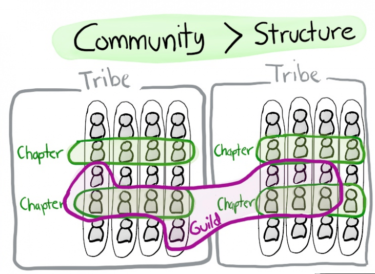

Parte I - Desenvolvimento de Software Ágil
Introdução
Esse capítulo é dedicado à instrutores, professores, gestores que tem interesse em
Métodos Ágeis
Manifesto ágil
Em fevereiro de 2001, nos Estados Unidos, 17 desenvolvedores de software iniciaram um movimento que se tornaria a base para a criação dos frameworks e métodos ágeis. Insatisfeitos com os resultados obtidos na adoção das metodologias existentes, o grupo criou uma declaração de valores e princípios que representam uma maneira melhor de desenvolver software.
O Manifesto é composto por um conjunto de quatro valores e doze princípios que representam a essência do Ágil e devem guiar as opções e alternativas relativas a práticas, papéis, cerimônias, métodos ou frameworks.
Os quatro valores do Manifesto Ágil são:
- Indivíduos e interações mais que processos e ferramentas;
- Software em funcionamento mais que documentação abrangente;
- Colaboração com o cliente mais que negociação de contratos;
- Responder a mudanças mais que seguir um plano.
Os doze princípios do Manifesto Ágil são:
- Nossa maior prioridade é satisfazer o cliente por meio da entrega contínua e adiantada de software com valor agregado.
- Mudanças nos requisitos são bem-vindas, mesmo tardiamente no desenvolvimento. Processos ágeis tiram vantagem das mudanças visando vantagem competitiva para o cliente.
- Entregar frequentemente um software funcionando, num prazo de poucas semanas a poucos meses, com preferência à menor escala de tempo.
- Pessoas de negócio e desenvolvedores devem trabalhar diariamente em conjunto por todo o projeto.
- Construa projetos em torno de indivíduos motivados. Dê a eles o ambiente e o suporte necessário e confie neles para fazer o trabalho.
- O método mais eficiente e eficaz de transmitir informações para e entre uma equipe de desenvolvimento é por meio de conversa face a face.
- Software funcionando é a medida primária de progresso.
- Os processos ágeis promovem desenvolvimento sustentável. Os patrocinadores, desenvolvedores e usuários devem ser capazes de manter um ritmo constante indefinidamente.
- Contínua atenção à excelência técnica e bom design aumenta a agilidade.
- Simplicidade – a arte de maximizar a quantidade de trabalho não realizado – é essencial.
- As melhores arquiteturas, requisitos e designs emergem de equipes auto-organizáveis.
- Em intervalos regulares, a equipe reflete sobre como se tornar mais eficaz e então refina e ajusta seu comportamento de acordo.
As pessoas que assinaram o Manifesto Ágil em 2001 foram um grupo de desenvolvedores de software que estavam insatisfeitos com as metodologias existentes e buscavam uma maneira melhor de desenvolver software. Eles se reuniram para criar uma declaração de valores e princípios que representassem uma abordagem mais eficiente e eficaz para o desenvolvimento de software.
Esses desenvolvedores não criaram um novo método específico, mas sim um conjunto de princípios e valores que poderiam ser aplicados em diferentes métodos e práticas de desenvolvimento de software. O objetivo era promover uma cultura de colaboração, flexibilidade, adaptabilidade e entrega contínua de valor para o cliente.
A partir do Manifesto Ágil, foram desenvolvidos diversos frameworks e métodos ágeis, como Scrum, XP (Extreme Programming), Kanban, entre outros, que buscam implementar esses valores e princípios em práticas específicas de desenvolvimento de software. O Manifesto Ágil é um marco importante na história do desenvolvimento de software e continua a ser uma influência significativa na maneira como projetos de software são gerenciados e executados atualmente.
Metodologias Ágeis
No que diz respeito às Pessoas, as metodologias ágeis enfatizam a importância do relacionamento entre as pessoas e buscam melhorar esse relacionamento por meio de práticas como retrospectivas, liderança servil e design centrado no usuário. O objetivo é criar um ambiente colaborativo e produtivo em que as pessoas possam se comunicar de forma clara e trabalhar juntas para alcançar os objetivos do projeto.
Em relação ao Processo, as metodologias ágeis trazem melhorias na forma como as equipes trabalham e nos processos que elas seguem. Esses processos são mais eficientes, com métricas que permitem visibilidade e ferramentas que possibilitam a melhoria contínua. Os processos são mais leves do que os métodos tradicionais, o que os torna mais flexíveis e adaptáveis às mudanças.
No que se refere ao Produto, as metodologias ágeis buscam a eficácia na criação, evolução e operação dos produtos. O objetivo é criar produtos de alta qualidade que atendam às necessidades dos usuários.
Finalmente, um conceito chave das metodologias ágeis é o Time-Box. O conceito de time-boxing é uma das práticas-chave das metodologias ágeis. Time-boxing significa definir um tempo limite para a realização de uma atividade, reunião ou ciclo de desenvolvimento. Por exemplo, as sprints do Scrum são time-boxes para o desenvolvimento de software, com um período definido de 1 a 4 semanas para concluir uma série de tarefas. A prática de time-boxing ajuda a criar um senso de urgência e foco na equipe, além de garantir que as atividades sejam concluídas dentro de um período definido. Isso também ajuda a evitar o desperdício de tempo e recursos, uma vez que a equipe sabe que tem um prazo limitado para concluir uma determinada atividade.
Scrum - Produtividade da Equipe
O Scrum é um framework ágil de gestão de projetos que visa entregar valor de forma iterativa e incremental. Ele se baseia em um processo iterativo e incremental que permite à equipe de desenvolvimento se adaptar rapidamente a mudanças, aumentando assim a eficácia da equipe. Foi proposto pelo Jeff Sutherland, e o guia completo do Scrum é constantemente atualizado e disponibilizado em português aqui.
- Objetivo
- Princípios
- Práticas

Extreme Programming (XP) - Produtividade do Código
O prim
Valores
Princípios
Praticas

Spotify - Escalando Times Ágeis

Outros
Produtividade da Equipe
Reuniões: por que elas existem?
As reuniões existem para atender à necessidade humana de comunicação e colaboração. Elas são utilizadas para compartilhar informações importantes, alinhar objetivos e tomar decisões. No entanto, as reuniões devem ser bem organizadas e estruturadas para que sejam eficazes.
É importante ressaltar que a comunicação não é apenas uma questão de informação, mas também de relacionamentos interpessoais. As reuniões permitem que os membros da equipe interajam e se conheçam melhor, o que pode aumentar a coesão e a colaboração.
Embora algumas pessoas possam questionar a necessidade de reuniões e preferir métodos de comunicação mais informais, é importante lembrar que as reuniões são uma oportunidade para envolver toda a equipe e obter feedback de todas as partes interessadas. Além disso, as reuniões podem ajudar a minimizar conflitos e garantir que todas as informações sejam compreendidas corretamente.
Por fim, é importante destacar que a pessoa que lidera a reunião desempenha um papel fundamental no sucesso da mesma. É essencial que a pessoa Tech Lead seja capaz de manter a reunião focada, garantir que todos os membros da equipe tenham a oportunidade de falar e incentivar a participação ativa de todos os envolvidos.
Em resumo, as reuniões são uma ferramenta valiosa para a comunicação e colaboração em ambientes de trabalho, mas devem ser bem organizadas e estruturadas para serem eficazes. A pessoa Tech Lead tem um papel fundamental no sucesso da reunião, e a comunicação é importante não apenas para transmitir informações, mas também para construir relacionamentos interpessoais e aumentar a coesão da equipe.
Papel do Scrum Master/Teach Lead na reunião?
As reuniões são sustentadas por quatro pilares fundamentais que guiam todas as ações e atitudes do Scrum Master. Esses pilares são: guiar as pessoas, criar conexões, observar e intervir e consenso ou consentimento.
Guiar as pessoas envolve criar um ambiente seguro e confortável para que os participantes possam expressar suas opiniões. Criar conexões é essencial para que todos se sintam ouvidos e suas opiniões conectadas, gerando confiança entre o grupo. A pessoa Tech Lead deve ter uma escuta ativa e estar atenta para perceber se o grupo está caminhando rumo ao objetivo do encontro.
Observar e intervir é a base para estimular a eficiência do processo, permitindo que a pessoa Tech Lead identifique elementos que possam prejudicar a eficácia do encontro e saiba como agir em relação a eles. E, finalmente, o consenso ou consentimento é fundamental para garantir que o grupo possa tomar decisões equilibradas, identificando a melhor abordagem para a tomada de decisão e evitando que o processo se torne custoso para a organização.
Ao seguir esses quatro pilares, a pessoa Tech Lead pode conduzir reuniões e encontros de forma mais eficaz, garantindo que todos os participantes possam contribuir e que as decisões tomadas sejam equilibradas e bem-sucedidas.
Os erros e acertos são oportunidades excelentes para aprender e evoluir na habilidade de facilitação. É importante lembrar que essa é uma habilidade que requer prática e aperfeiçoamento contínuos. Nós, autores, estamos nessa jornada junto com você.
Para ajudá-lo a evitar alguns dos erros comuns na facilitação, gostaríamos de compartilhar alguns dos erros communs já observados na disciplina: tentar resolver todos os problemas em uma única reunião, falta de energia da pessoa facilitadora ou do grupo, e não alinhar o contexto e objetivo da reunião. Para mais detalhes sobre cada um desses erros, você pode consultar nosso livro A Arte da Facilitação. A importância de reconhecer e aprender com nossos erros e acertos é fundamental para a evolução profissional. Devemos estar abertos a cometer erros e aprender com eles, pois nenhuma jornada é construída apenas com sucessos.
Problemas que podem ocorrer nas reuniões
As reuniões podem ser altamente produtivas e eficazes, mas também estão sujeitas a uma série de disfunções que podem prejudicar seu propósito e resultados. Algumas das disfunções comuns incluem bate-boca e confronto, falta de tempo disponível, voltar à estaca zero e lidar com um grande número de pessoas e suas contribuições. No entanto, existem estratégias que as pessoas Tech Leads podem usar para minimizar essas disfunções e maximizar a eficácia da reunião.
Em caso de bate-boca e confronto, é recomendado fazer uma pausa estratégica ou até mesmo cancelar a reunião para evitar conflitos desnecessários e manter o objetivo da reunião. Para lidar com a falta de tempo disponível, a estratégia de timeboxing é uma boa opção, permitindo que os participantes se concentrem em tópicos prioritários e evitem discussões irrelevantes.
Quando um grupo volta à estaca zero, pode ser útil criar um glossário com definições importantes para o entendimento geral do grupo e revisar periodicamente essas definições para manter a progressão do grupo.
Ao lidar com um grande número de pessoas, a pessoa Tech Lead deve buscar o consentimento do grupo para garantir uma tomada de decisão equilibrada e evitar uma decisão catastrófica.
Com essas estratégias em mente, a pessoa Tech Lead pode garantir uma reunião produtiva e eficaz para todos os participantes.
Checklist para Tech Lead em reuniões
- Visibilidade do tempo de duração
- Não seja o centro das atenções
- Dê oportunidade de fala para todos
- Defina um tomador de decisão
- Identifique o efeito pipoca durante a reunião
- Dê espaço para o silêncio
- Faça acordos prévios
- Intervalos regulares
Produtividade de Software
Dica
O principal foco do Onboarding é guiar os membros em um processo de auto aprendizado além da mentoria/liderança serem crucial para o compartilhamento de práticas e cultura